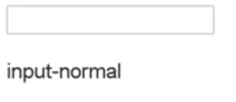

DOM (Document Object Model)
Se trata de la interfaz que contiene todos los elementos estandares que nos permite representar un documento HTML, MXL o XHTML, la cual a su vez conitenen una segunda interfaz que nos permite indicar que elemento se vincula con que otro y por ultimo una tercera interfaz que funciona como puente para que se pueda trabajar con el DOM desde javaScript.
Ejemplo Conceptual
Este codigo se puede interpretar de la siguite manera:
Nodo
-
Un nodo es un proceso interno que hace referencia a cualquier etiqueta HTML del cuerpo, ya sea un parrafo, las etiquetas de una lista o incluso el mismisimo body del documento, por lo cual se pueden categorizar en varios tipos:
-
Documento
Se trata del nodo raiz, del cual deriban todos los otros nodos
-
Element
Se trata de aquellos nodos definidos por etiquetas HTML
-
Text
El texto dentro de un nodo "Element" se considera un nodo hijo de tipo text, en otras palabras el texto de las etiquetas es referenciado por un nodo de tipo text.
-
atribute
Los atributos de las etiquetas definen nodos, (en javaScriptesto no se ven como nodos, si no, como información asocioada a los nodos de tipo Element)
-
Comentarios y Otros
Los comentarios y los elementos como las declaraciones doctype en la cabezera del documento HTML generan este tipo de nodos.
A la hora de trabajar con los nodos puede llegar a ser necesario el conocer con cual tipo de nodo se esta trabajando en el momento, para esto cada uno de los tipos de nodos esta vinculado con un valor numerico, el cual hace referencia a su tipo, valores que estan indicados en la siguiente imagen.
Estos valores seran retornados en aquellas ocaiones en las que se realise una consulta para saber con que tipo de nodo se esta trabajando.
En este cuadro se expresan otros tipos de nodos ademans de los ya vistos, los cuales no son muy importantes o no forman parte de las recomendaciones oficiales (pulgar abajo).
Nota: Todas las etiquetas HTML son definidas por nodos, pero en contraposición no todos los nodos hacen referencia a etiquetas, tambien se pueden tratar de otro tipos de elementos.
Metodos de Selección de Elementos
Son los metodos del objeto "Documento" que permiten obtener cualquier elemento o grupo de estos con los que se desee trabajar, para lo cual existen varios tipos de metodos:
GetElementById()
-
Este metodo permite seleccionar un elemento HTML en base a su ID, el ID de un elemento debieria de ser su identificador unico, por lo que al trabajar con el metodo "getElementById" por lo general lo que se busca es seleccionar unicamente a un elemento en espesifico.
HTML
JavaScrip
Resultado
En este ejemplo el documento HTML posee un elemento "p" (parrafo) con un id "parrafo",el cual es seleccionado por medio del metodo "getElementById" para guardarlo dentro de la varible del mismo nombre, y posterior mente se pide que se imprima en pantalla el contenido de esta variable, lo que retorna la desripción del elemento HTML que se encuentra vinculado a la varible.
GetElementsByTagName()
-
Este metodo permite selecionar un conjunto de elementos HTML, en espesifico todos aquellos que permtenezcan al mismo tipo de etiqueta, para lo cual se define el tipo de etiqueta con su nombre dentro de comillas de la siguiente forma:
JavaScrip
Resultado
En este caso en el ejemplo se selecciona al elemento HTML en base al tipo de etiqueta, por lo que todos aquellos elemento que pertenezcan a la misma etiqueta seran seleccionados, por ello al guardar los elementos dentro de la variable "parrafo" y imprimirlo en pantalla se espesifica que no se trata de un elemento, si no de una colección de estos.
Este metodo retorna una lista de elementos (no es un array, si no un objeto), por lo que en el caso de que se quiera seleccionr unicamete uno de estos se indica la posición en la que se encuentra este elemento (empezando por la 0) de la siguiente forma:
JavaScrip
Resultado
En este segundo ejemplo se selecciona unicamete el primer parrafo del grupo de etiquetas "p".
Nota: Esta no es la mejor forma de seleccionar elemento indibiduales.
QuerySelector()
-
Este metodo debuelve el primer elemento que coincida con el grupo espesificado de selectores CSS, es decir este metodo selecciona los elementos HTML en base a los selectores CSS que posean, sin embargo unicamente seleccionara el primero de estos elementos.
Al emplear este metodo es importante tener presenta que para indicar el selector es necesario hacerlo de la misma forma que se indican dentro de un documeto CSS, de la siguiente manera:
HTML
JavaScrip

Nota: Recordar que en CSS el selector para las clases es un punto antes del nombre.
Resultado
En este ejemplo se define la clase "parrafo" para el primer elemento "p", y se emplea el metodo "querySelector" para seleccionarlo y guardarlo en la varible "parrafo", ya que este metodo solo retorna el primer elemento si se desease seleccionar el segundo elemento "p" se tendra que aplicar un selector CSS de ID (#nombre) y posterior mente aplicar este metodo.
Nota: Pese a que este metodo permte seleccionar elementos por su ID el metodo "getElementById" es más optimo.
QuerySelectorALL()
-
Este metodo se asemeja mucho en funcionamieto a "querySelector", con la diferencia de que este no selecciona unicamete el primer elemento si no que los retorna a todos, y lo hace dentro de una "lista de Nodos", (la cual es un objeto), por lo que la forma de selccionar un unico elemento es similar a la del metodo "getElementsByTagName".
HTML
JavaScrip
Nota: Recordar que en CSS el selector para las clases es un punto antes del nombre.
Resultado
En este ejemplo se utiliza el metodo "querySelectorAll" para selccionar todos los elementos que posean la clase "parrafo" y posterior mente se indica que se imprima en pantalla el elemento en la primera posición.
Metodos para Definir, Obtener y Eliminar Valores de Atributos
SetAttribute()
-
Este metodo permite modificar o generar los atributos de elementos HTML, su funcionamieto es muy simple, basta con seleccionar un elemento, almacenarlos en una varible y posteriormente a esa varible aplicarle esta propiedad, la cual recibe dos datos de tipo String, el primero corresponde al nombre del atributo que se desea modificar, mientras que el segundo dato define el nuevo valor que se le asignara.
HTML
Resultado HTML
JavaScrip
Resultado JavaScrip
Nota: Este metodo funciona incluso si el elemento no tiene definido el atributo, ya que este metodo permite remplazar o generar el valor de estos.
GetAttribute()
-
Este metodo permite obtener el valor de un atributo de algun elemento HTML, es decir retorna el valor que se encuentra entre comillas ("") del atributo.
Por lo tanto es un metodo con un funcionamiento muy similar al anterior con la diferencia de que solo recibe un dato, el cual corresponde al nombre del atributo del que se extraera su valor.
JavaScrip
Resultado
En este ejemplo aunque no se evidencie mucho, el valor del atributo ("type") se imprime en pantalla y se muestra a la do de los elementos HTML.
RemovetAttribute()
-
Este metodo permite directamete eliminar los atributos de un elemento, su funciona miento es muy similar al de los anteriores metodos, el cual solo recibe una dato de tipo string, el cual corresponde al nombre del atributo que sera elminado.
JavaScrip
Atributos Basicos HTML
Atributos Globales
-
En HTML existen numerosos atributos globales, sin embargo un listado de los atributos globales que más comunmente son usados son:
-
Class
Lista de clases del elemento separadas por espacios
-
Contenteditable
Indica si el contenido puede ser modificable por el usuario, recibe valores booleando (true, false).
-
Dir
Ese atributo define la dirección del texto, su valor por defecto es ltr(left to Right), tambien posee el valor: rtl (Right to left )
Nota: este atributo es mejor aplicarlo desde CSS no desde HTML
-
ID
Define un identificador unico para un elemento
-
Hidden
Este atributo no posee valor, solo con el estar defido el elemento se cultara.
-
Tabindex
Este atibuto define el si un elemento puede obtener un focus de imput, para su funcionamiento este atributo debe poseer un valor numerico, ya que tambien funcina para definir el orden en el que varios elementos reciben el focus ,
-
Title
Este atributo permite definir el texto de información extra que aparece al mantener el raton sobre un elemento.
Todos estos atributos pueden ser manipulados con los difenrentes metodos mencionados anteriormente.
Metodos deInputs
Para JavaScrip los metodos de los inputs son especiales, ya que al ser un elemento que guarda una estrecha relación con el lenguaje este se encuentra adpatado para trabajar con estos atributos más facilmete,
Tanto así que JavaScrip puede interactuar con estos como si se tratase de un objeto cualquiera, por ende se les puede aplicar varios metodos que modificaran los atributos de los input.
Para ejemplificar adecuadamete rodos estos metodos partiran de este ejemplo HTML:

Nota: Para trabajar con los inputs directamete desde JavaScrip se necesita seleccionar el elemento y guradarlo en una varible.
ClassName
-
Este metodo permite retornar el valor del atributo "class", es decir retorna el valor que se encuentra entre comillas ("") del atributo "class".
Ejemplo
Resultado

En este ejmeplo se inscribe el valor de la propiedad "class" en pantalla.
Value
-
Este metodo permite obtener el valor de la propiedad value, es decir retorna el valor que esta entre comillas ("") del atributo "value" (texto por defecto).
Ejemplo
Resultado
Type
-
Este metodo permite modificar el valor de la propiedad "type" del elemento input, por lo tanto permite modificar dinamicamete el tipo de input.
Ejemplo
Resultado
Accept
-
Este metodo permite determinar que archivos tipo de archivo va a ser aceptado por un input de tipo "file", es decir permite delimitar los archivos que pueden ser enviador por los usuarios.
Ejemplo
Resultado
Nota: este atributo tambien puede ser modificado desde HTML
Form
-
Este metodo permite modificar el valor del atributo "form" de un boton, en un formulario si se ingresa un boton de tipo submit este por si solo se vinculara al formulario siempre y cuando este este definido dentro de este, para los casos en los que no es así y el boton se encuentra por fuera es el atributo "form" el que se encarga de vincular el boton con el formulario y esto lo hace atravez del "id" del formulario.
Minlength
-
Este metodo permite modificar el valor del atributo "minlength", el cual se encarga de asignar una cantidad minima de caracteres a un input de tipo "text" para que sus datos puedan ser enviado, si no se cumple esta condición se lanza un mesaje de alerta al usuario.
Ejemplo
Resultado
PlaceHolder
-
Este metodo permite modificar el valor del atributo "Placeholder", el cual permite designar un texto por defecto al input de tipo "text".
Ejemplo
Resultado
Required
-
Este etodo permite modificar el valor del atributo "required", el cual se encarga de definir el si un elemeto de un input es requerido para enviar la información, es dicri define el si un capo tiene que ser completando para realizar el evio de los datos.
Ejemplo
Resultado
Nota: A este atributo cualquier valor ingresado lo habilita, desde un true hasta un espacio (" ").
Metodo Style
Se trata de un metodo que permite modificar ciertos aspectos de los estilos desde JavaScrip, para hacerlo este metodo posee multitud de sub-metodos, los cuales hacen referencia a un propiedad CSS, es decir cada sub-metodo representa un atributo de estilos del elemento seleccionado, estos sub-metodos se definen de la misma forma que un metodo comun, (un punto y el nombre del metodo).
A su vez luego de definir el sub-metodo que hace referencia a la propiedad CSS a aplicar se concatena con el signo igual y se ingresa entre comillas ("") el valor que se aplicara a dicha propiedad CSS, por lo tanto la estructura del metodo "style" seria así: "metodo Estile", "sub-metodo (atributo CSS)" seguido del valor de la propiedad CSS.
Ejemplo
Resultado
Como se puede apreciar en el ejemplo al elemento HTML, el cual se encuentra seleccionado apartir de su clase se le aplica el metodo "style" más espesificamete el sub-metodo "color" el cual hace referencia al atributo CSS "color", responsable de cambiar los colores de los elementos.
De este modo, utilizando los sub-metodos se puede espesificar los valores de las propiedades CSS, una aspecto a considerear es que en CSS originalmete las propiedades cuyos nombres poseen barias palabras se escriben con una barra lateral (-) separandolos, en JavaScrippor otro lado se emplea camelCase, por lo que las palabras se escriben pegadas pero con la primera letra de cada palabra en mayscula como en el siguiente ejemplo:
Nota: para modificar otra propiedad de CSS se requiere realizar el llamado al metodo de nuevo, no se puede modificar barios estilos de una sola vez.